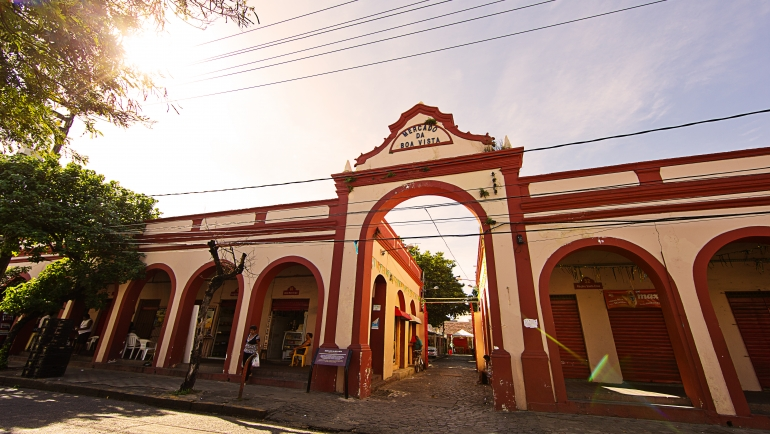

Instalado no estuário do Porto do Recife, defronte do Marco Zero, o Parque das Esculturas Francisco Brennand foi construído no ano 2000 como marco comemorativo dos 500 anos do Descobrimento do Brasil. É quase uma centena de esculturas do artista pernambucano Francisco Brennand, acessíveis de barco a partir do pequeno cais no Marco Zero.
O Mercado da Boa Vista é tão antigo quanto o de São José. Possui 63 boxes, que comercializam cereais, verduras, frutas e legumes, carnes, aves e frios, além de ervas e armarinhos. Há nove bares, que servem comida regional no café da manhã, almoço e jantar. A clientela é formada, principalmente, por sindicalistas e políticos, que se deliciam com o famoso patinho cozido no feijão preto. Localizado à Rua de Santa Cruz, no Bairro da Boa Vista, sabe-se que o mercado foi estrebaria e Cemitério da Capela, hoje transformada em Igreja de Santa Cruz. Ali funcionou um mercado de escravos. Onde hoje é o compartimento nº1, os servos eram chicoteados.
